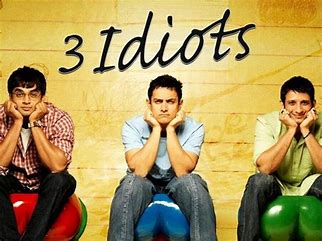
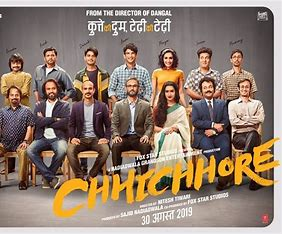

The Best movie according to Prithvi
My top 3 movie of all time
3idiots

3 Idiots is a 2009 Indian Hindi-language coming-of-age comedy-drama film directed by Rajkumar Hirani and produced by Vidhu Vinod Chopra.
The movie stars Aamir Khan, Kareena Kapoor Khan, R. Madhavan, Sharman Joshi, Omi Vaidya, Parikshit Sahni and Boman Irani.
The plot follows the life of three students at an Indian engineering college and their struggles to cope with academic pressure and their
dreams .
Phir hera pheri

Hera Pheri is a comedy movie about an eccentric trio consisting of a garage owner named Baburao Ganpatrao Apte,
a crafty and cunning loafer named Raju, and a simple and struggling pauper named Shyam.
The plot revolves around their crazy shenanigans.
The movie also features two small-time crooks named Vijay and Ajay who loot other rich 'respected' but criminal-minded people for a living.
The movie is about their adventures and misadventures.
Chhichhore

Chhichhore is a movie that tells the story of Aniruddh "Anni" Pathak,
a middle-aged divorcee whose son Raghav tries to commit suicide after
failing to clear the JEE entrance examination. The movie is set parallelly
in the 1990s and 2019. The story is about a bunch of engineering students and
their journey from being losers to choosers. It's an ode to college-time friendships,
romances, ragging, fights, competitions and countless memories. The movie is a riot of
emotions and takes you on a nostalgic ride. It's a relevant film with a rather important
message conveyed through an engaging narrative.